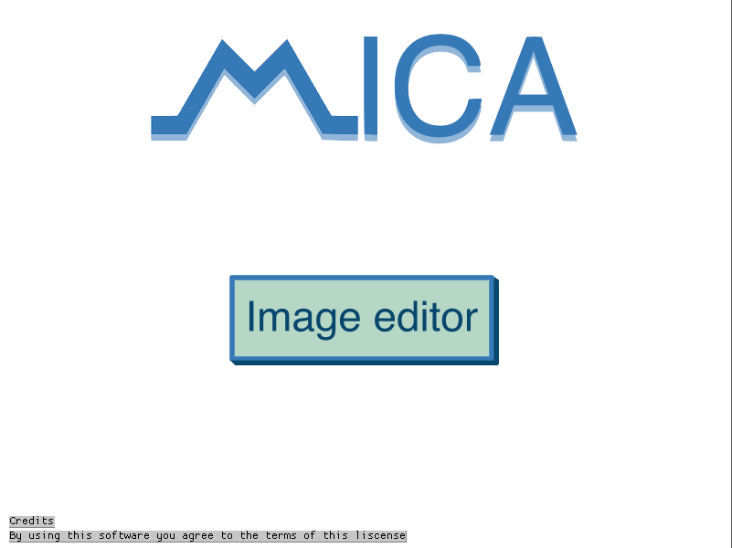

Mica is an art program made by Milorad, M.I.C.A. stands for Milorad Image Creation Application the use of
the names Mica and M.I.C.A. are interchangeable

this is the main menu for Mica and is the first thing you'll see when you open the amazing Mica image editor/creator you can press Image editor to open the image editor/creator it will prompt you to enter the x size and then the y size and greets you with the image editor, we will get to that later though